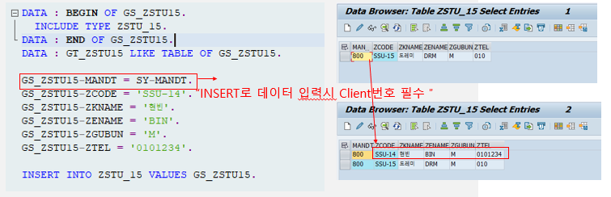

20221006 - INSERT, UPDATE, DELETE, MODIFY
se16n
table data management
DATABASE TABLE 제어-INSERT
Single line
테이블에 하나의 line을 삽입하기 위해 사요하며, WA의 데이터를 INSERT 하기 위해서는 WA는 테이블과 같은 구조로 선언 필수
INSERT INTO TABLE VALUES WA
INSERT TABLE FROM WA

DATA: BEGIN OF GS_ZSTU1.
INCLUDE TYPE ZEDU_1.
DATA: END OF GS_ZSTU1.
DATA: GT_ZSTU1 LIKE TABLE OF GS_ZSTU1.
GS_ZSTU1-MANDT = SY-MANDT.
GS_ZSTU1-ZCODE = 'SSU-01'.
GS_ZSTU1-ZKNAME = '오해원'.
GS_ZSTU1-ZENAME = 'Haewon Oh'.
GS_ZSTU1-ZGRADE = '4.0'.
GS_ZSTU1-ZSEMESTER = 7.
GS_ZSTU1-ZCREDIT = 140.
INSERT INTO ZEDU_1 VALUES GS_ZSTU1.Several lines
INTERNAL TABLE의 모든 값을 한 번에 테이블에 삽입
INSERT TABLE FROM TABLE ITAB
INSERT TABLE FROM TABLE ITAB ACCEPTING DUPLICATE KEYS


DATA: BEGIN OF GS_ZSTU1.
INCLUDE TYPE ZEDU_1.
DATA: END OF GS_ZSTU1.
DATA: GT_ZSTU1 LIKE TABLE OF GS_ZSTU1.
GS_ZSTU1-MANDT = SY-MANDT.
GS_ZSTU1-ZCODE = 'SSU-01'.
GS_ZSTU1-ZKNAME = '오해원'.
GS_ZSTU1-ZENAME = 'Haewon Oh'.
GS_ZSTU1-ZGRADE = '4.0'.
GS_ZSTU1-ZSEMESTER = 7.
GS_ZSTU1-ZCREDIT = 140.
APPEND GS_ZSTU1 TO GT_ZSTU1.
GS_ZSTU1-MANDT = SY-MANDT.
GS_ZSTU1-ZCODE = 'SSU-02'.
GS_ZSTU1-ZKNAME = '지수'.
GS_ZSTU1-ZENAME = 'Jisu'.
GS_ZSTU1-ZGRADE = '4.1'.
GS_ZSTU1-ZSEMESTER = 6.
GS_ZSTU1-ZCREDIT = 120.
APPEND GS_ZSTU1 TO GT_ZSTU1.
INSERT ZEDU_1 FROM TABLE GT_ZSTU1 ACCEPTING DUPLICATE KEYS.
IF SY-SUBRC = 0.
WRITE:/ 'Succeeded to insert'.
ENDIF.UPDATE
single line
테이블에 하나의 line을 변경
WA의 데이터를 UPDATE하기 위해서는 WA는 테이블과 같은 구조로 선언 필수
UPDATE TABLE FROM WA
DATA: BEGIN OF GS_ZSTU1.
INCLUDE TYPE ZEDU_1.
DATA: END OF GS_ZSTU1.
DATA: GT_ZSTU1 LIKE TABLE OF GS_ZSTU1.
GS_ZSTU1-MANDT = SY-MANDT.
GS_ZSTU1-ZCODE = 'SSU-01'.
GS_ZSTU1-ZKNAME = '오해원'.
GS_ZSTU1-ZENAME = 'Haewon Oh'.
GS_ZSTU1-ZGRADE = '4.0'.
GS_ZSTU1-ZSEMESTER = 7.
GS_ZSTU1-ZCREDIT = 140.
UPDATE ZEDU_1 FROM GS_ZSTU1.
IF SY-SUBRC = 0.
WRITE:/ 'Succeeded to update'.
ENDIF.several lines
INTERNAL TABLE의 여러 데이터를 한 번에 테이블에 반영
UPDATE TABLE FROM TABLE ITAB
DATA: BEGIN OF GS_ZSTU1.
INCLUDE TYPE ZEDU_1.
DATA: END OF GS_ZSTU1.
DATA: GT_ZSTU1 LIKE TABLE OF GS_ZSTU1.
GS_ZSTU1-MANDT = SY-MANDT.
GS_ZSTU1-ZCODE = 'SSU-01'.
GS_ZSTU1-ZKNAME = '오해원'.
GS_ZSTU1-ZENAME = 'Haewon Oh'.
GS_ZSTU1-ZGRADE = '4.0'.
GS_ZSTU1-ZSEMESTER = 7.
GS_ZSTU1-ZCREDIT = 140.
APPEND GS_ZSTU1 TO GT_ZSTU1.
GS_ZSTU1-MANDT = SY-MANDT.
GS_ZSTU1-ZCODE = 'SSU-02'.
GS_ZSTU1-ZKNAME = '지수'.
GS_ZSTU1-ZENAME = 'Jisu'.
GS_ZSTU1-ZGRADE = '4.1'.
GS_ZSTU1-ZSEMESTER = 6.
GS_ZSTU1-ZCREDIT = 120.
APPEND GS_ZSTU1 TO GT_ZSTU1.
UPDATE ZEDU_1 FROM TABLE GT_ZSTU1.
IF SY-SUBRC = 0.
WRITE:/ 'Succeeded to update'.
ENDIF.UPDATE SET
UPDATE SET 구문을 이용해 개별 칼럼 값을 변경
UPDATE TABLE SET FIELD = '변경할 값' WHERE [COND]

DELETE
Single line
테이블에 하나의 line을 삭제
WA의 데이터를 DELETE 하기 위해서는 WA는 테이블과 같은 구조로 선언 필수
DELETE TABLE FROM WA
Several lines
INTERNAL TABLE의 WHERE 조건에 해당하는 모든 값을 한 번에 삭제
DELETE FROM TABLE WHERE [COND]
MODIFY
MODIFY는 UPDATE 구문과 INSERT 구문을 합한 기능
KEY 값을 가지는 데이터가 테이블에 존재하면 UPDATE, 존재하지 않을 때는 INSERT 수행
Single line
테이블에 하나의 line을 수정
WA의 데이터를 MODIFY하기 위해서는 WA는 테이블과 같은 구조로 선언 필수
MODIFY TABLE FROM WA


Several lines
INTERNAL TABLE의 모든 값을 한 번에 변경 또는 추가
MODIFY TABLE FROM TABLE ITAB
In-class practice

IF GT_ZEDU_001[] IS NOT INITIAL.
DELETE ZEDU15_001 FROM TABLE GT_ZEDU_001.
ENDIF.